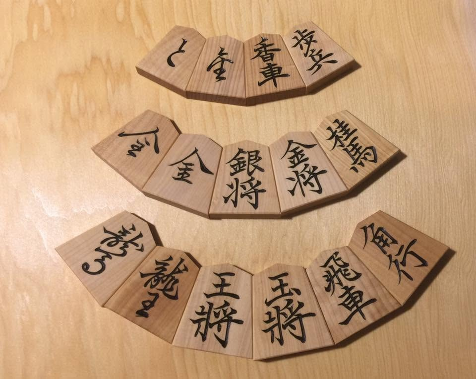
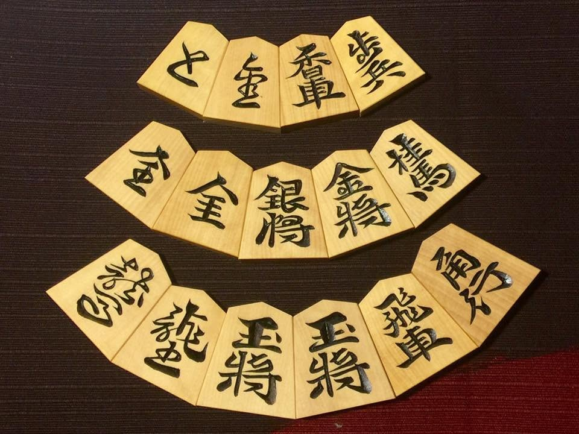

林震煌の将棋駒01 / 14
すべては、将棋から始まりました。
木の表情、文字の佇まい、手に取ったときの感触。盤上に並ぶ小さな駒には、指す楽しみと、眺める楽しみが息づいています。
幼い頃、父に中国象棋（シャンチー）を教わり、九州大学への留学中に将棋を覚えました。台湾に戻ってからも将棋を通じた交流が続き、2012年、台湾を訪れた駒師から駒づくりを学びました。
やがて、自分の文字で駒を作りたいという思いから、書道にも取り組むようになりました。道具にも工夫を重ね、手になじむ形を探しながら制作を続けています。
私にとって駒づくりは、将棋への愛着と、ものを作る喜びが重なる時間です。
十の作品、それぞれの表情。

菱湖書作品を見る ↗

蜀紅書作品を見る ↗

魚龍書作品を見る ↗

魚龍一字書作品を見る ↗

英朋書作品を見る ↗

清定書作品を見る ↗

王鐸書作品を見る ↗

瘦金書作品を見る ↗

龍門四品書作品を見る ↗

金農書作品を見る ↗
THE MAKER
作者紹介 — 林震煌
九州大学 博士（工学） 国立台湾師範大学名誉教授
国立台湾師範大学で化学および美術の教育・研究に携わる。駒づくりは駒師・富月に、書道は林隆達に師事。
素材への関心と、手を動かして工夫を重ねる姿勢を大切に、書の美しさと対局での読みやすさを探求している。字母紙の制作にも取り組み、五角形の駒の中に、文字の個性が調和する姿を目指す。
作品の駒銘は制作時期や作品によって異なります。本サイトでは作者名「林震煌」で紹介しています。
駒づくりを紹介した記事（47NEWS） ↗